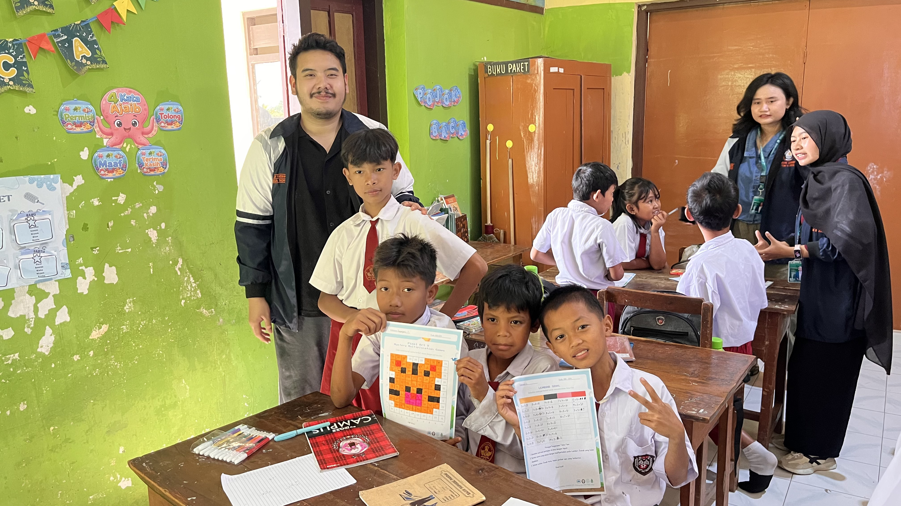
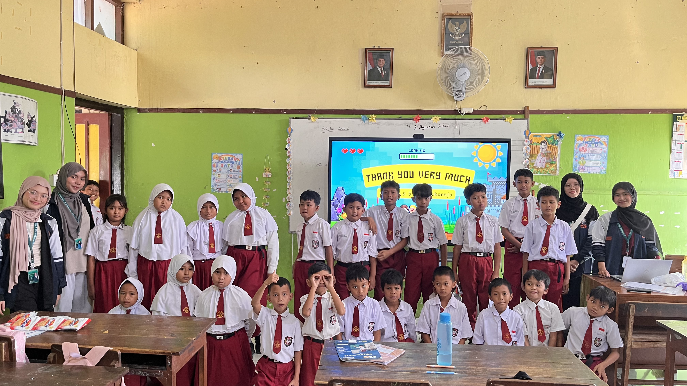
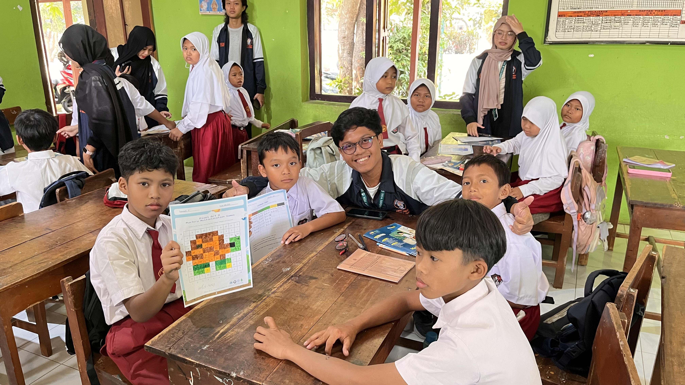

10 Agustus 2026

Berita Desa Sukorejo
Klaten, 10 Agustus 2026 — Mahasiswa KKN Universitas Diponegoro (UNDIP) melaksanakan program kerja "Sosialisasi Parenting Positif" pada Senin (10/8/2026) di Desa Sukorejo, Kecamatan Wonosari, Kabupaten Klaten. Kegiatan ini ditujukan kepada orang tua murid TK Pertiwi Desa Sukorejo dan KB Buah Hati Bunda sebagai upaya mendukung pola asuh yang lebih baik terhadap anak usia dini.
Pelaksanaan acara disesuaikan dengan tanggal yang telah disepakati bersama perwakilan orang tua murid dan pihak sekolah. Kegiatan ini difokuskan pada tema parenting positif, di mana materi yang diangkat merupakan hasil permintaan langsung dari warga setempat, pihak sekolah, maupun orang tua murid. Cakupan materi cukup luas, meliputi penerapan pola asuh positif serta penggunaan gadget pada anak usia dini.
Dari kegiatan ini, teridentifikasi bahwa sebagian besar anak di Desa Sukorejo sehari-hari diawasi oleh kakek atau nenek mereka, dikarenakan kedua orang tua bekerja. Para pengasuh lansia tersebut turut mengikuti kegiatan dengan antusias dan partisipatif. Selain itu, ditemukan pula bahwa banyak anak yang cenderung aktif dan sulit diawasi oleh wali maupun orang tua, sehingga sebagian dari mereka sempat menganggap penggunaan gadget sebagai solusi untuk mengatasi hal tersebut.
Menanggapi temuan tersebut, mahasiswa KKN UNDIP memberikan penjelasan mengenai dampak dan cara bijak dalam penggunaan gadget pada anak, disertai berbagai tips and trick praktis yang dapat diterapkan oleh orang tua maupun pengasuh di rumah.
Melalui kegiatan ini, mahasiswa KKN UNDIP berharap pemahaman mengenai parenting positif dapat memberikan manfaat bagi orang tua murid TK Pertiwi Desa Sukorejo dan KB Buah Hati Bunda, serta mendukung tumbuh kembang anak yang lebih optimal di lingkungan keluarga.


